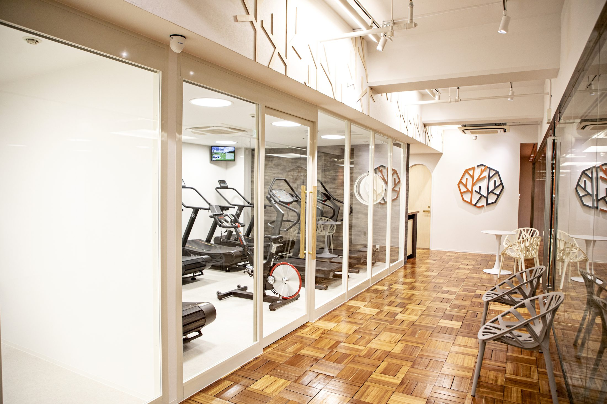
CORPORATE MEMBERSHIP
駅直結のブティックジム「SOLERA & BLACK CAT」に、会社で入れる法人契約。低酸素トレーニングと少人数のスタジオレッスンが、社員の福利厚生になります。社長おひとりの会社から。
モニター企業に申し込むFOR EMPLOYEES
駅直結で、仕事の前後や昼休みに寄れる場所。遠くの大型ジムの割引より、続けられる福利厚生です。
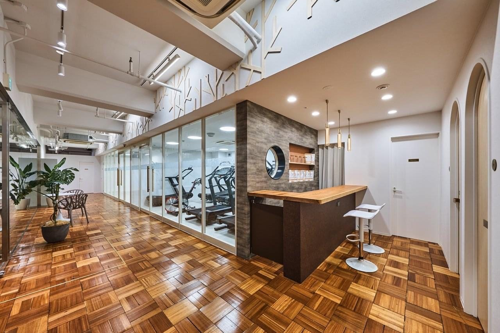
FOR BRANDING
「四条烏丸のブティックジムに、会社負担で通える」。求人票にも、会社案内にも、そのまま書けます。
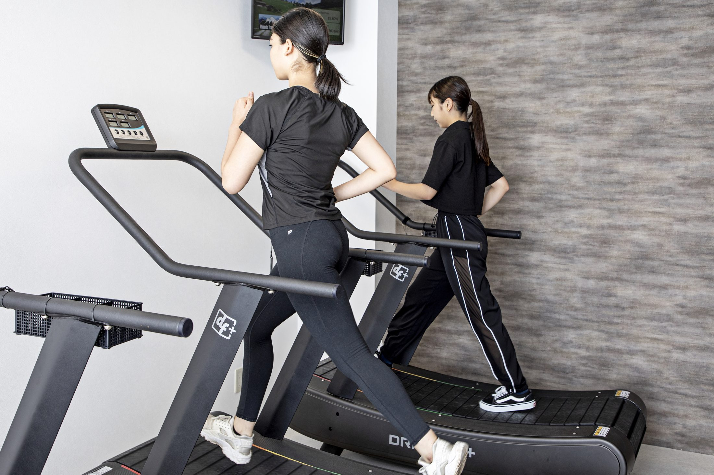
HYPOXIC TRAINING
標高約2,500m相当の低酸素ルーム。同じ速さで歩いても、平地より心肺への負荷が上がります。
短い時間で、密度の高い有酸素運動になります。
会話ができるくらいの速さで歩くだけ。息を切らして走る必要はありません。
トレッドミルかバイク。運動が久しぶりの人でも、初日から同じように使えます。
感じ方や効果には個人差があります。持病のある方、妊娠中の方は、初回の問診でご利用いただけない場合があります。
PROGRAMS
クラスはすべて、低酸素のスタジオで行います。運動が得意な人も、久しぶりの人も、合うものが見つかります。
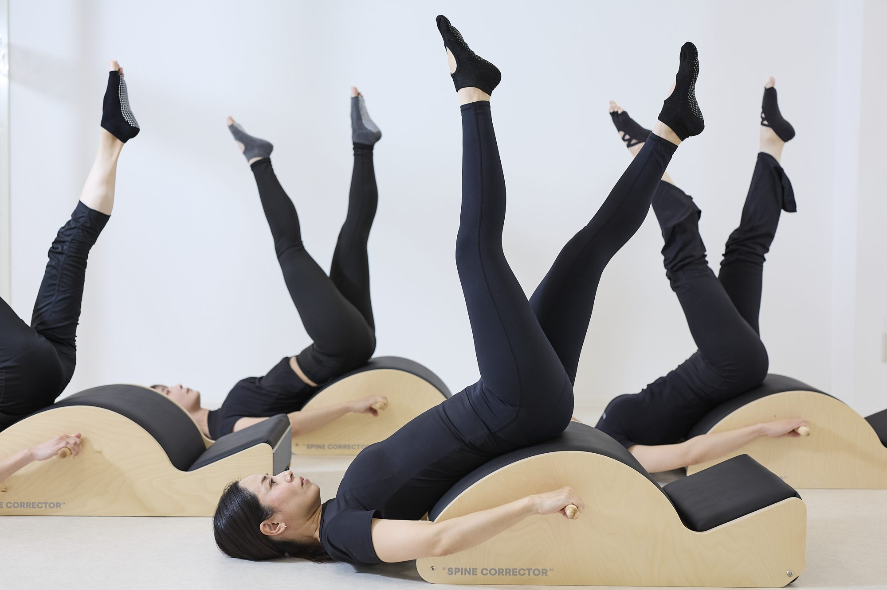
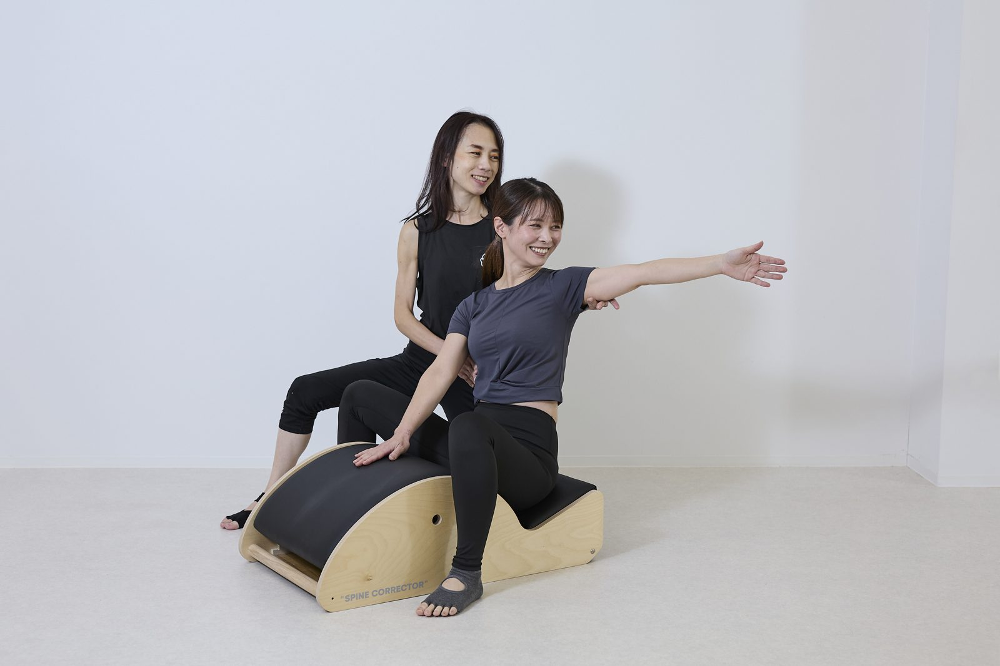
背骨のカーブに沿う器具「スパインコレクター」を使う、姿勢に特化したクラス。最大4名。
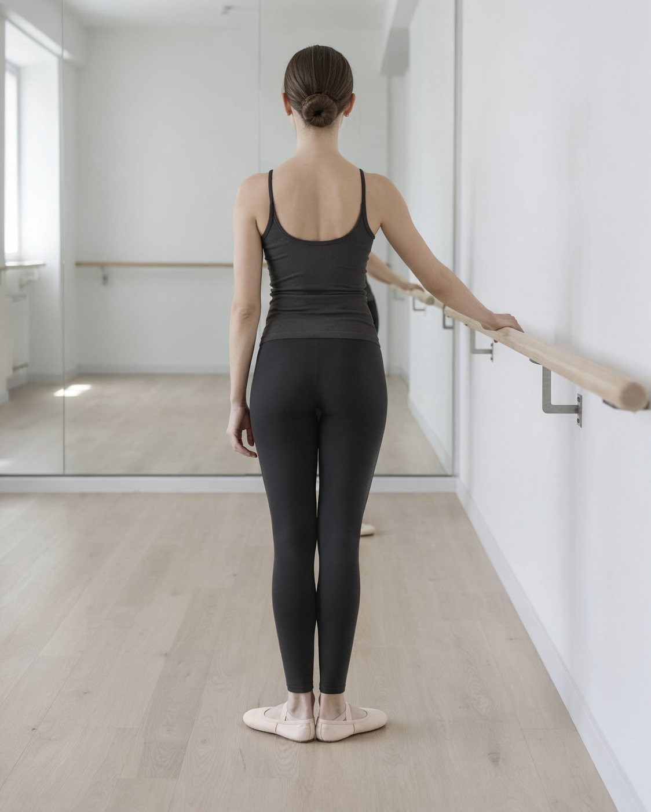
バーを使い、背筋の伸びた立ち姿をつくります。経験は要りません。（写真はイメージです）
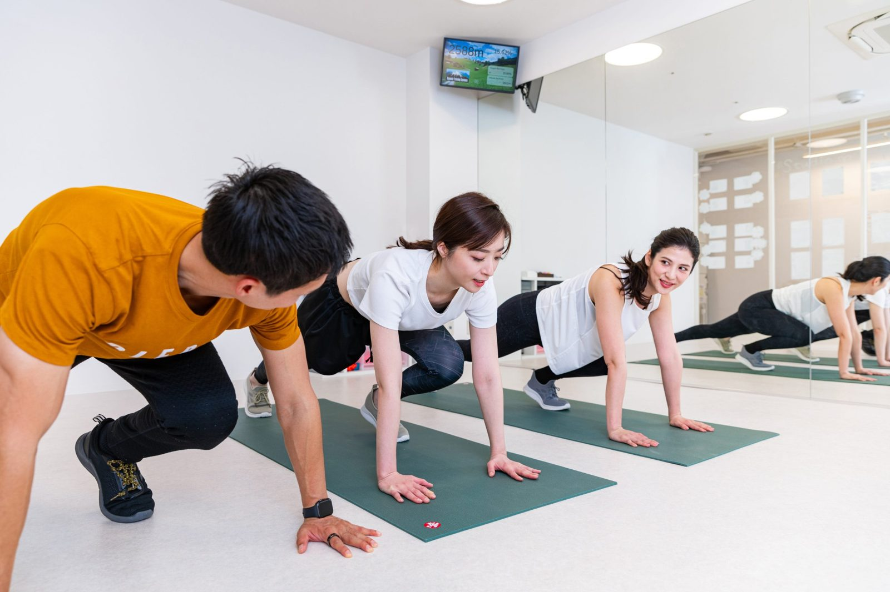
お腹と背中を中心に、ぶれない身体の土台を鍛えます。
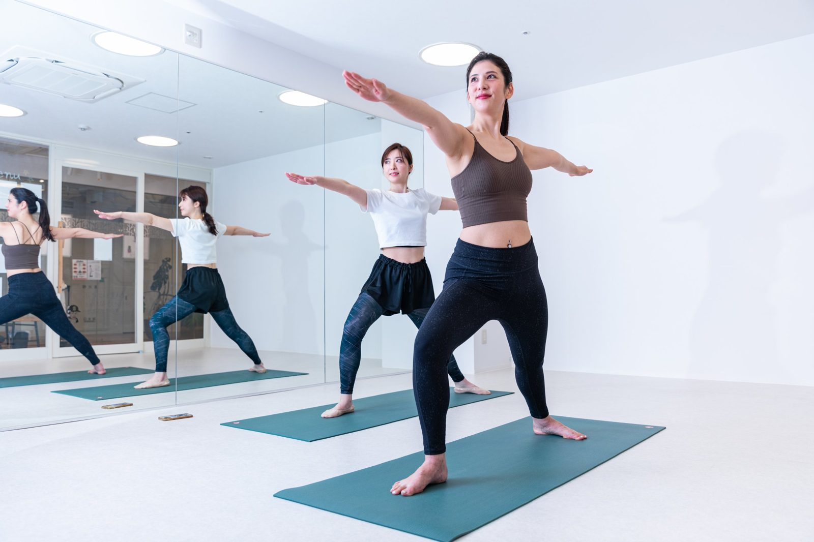
呼吸に合わせて、座りっぱなしの身体をゆるめます。
クラスの内容と時間割は変わることがあります。[最新の時間割へのリンク]
STUDIO
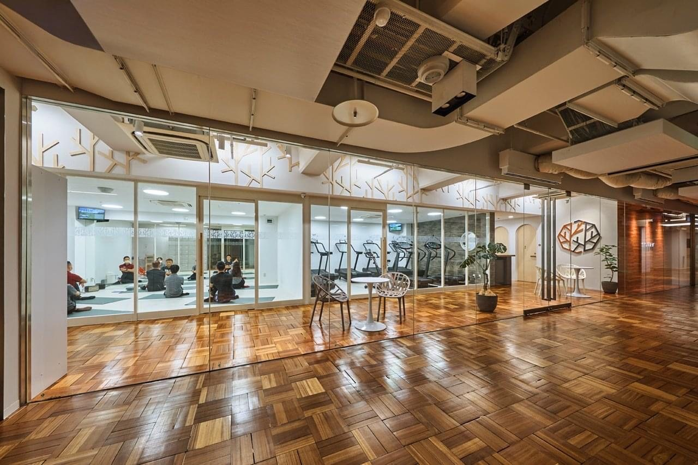
通路に面した全面ガラス張り。左がスタジオ、右が有酸素マシンの部屋。どちらも低酸素です。
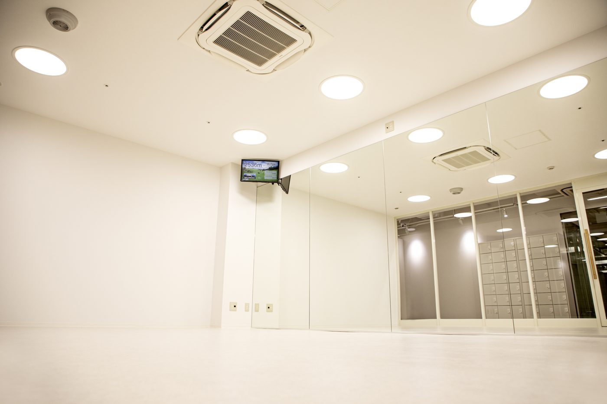
鏡張りの白い部屋。モニターに、いまの標高相当が表示されます。
初回は、スタッフが目的と体調を聞いてから始めます。
FOR COMPANIES
契約も請求書も会社あてです。社員が利用できる福利厚生として、福利厚生費で処理するのが一般的です。
社長おひとりの会社も、数十名の会社も、同じ契約です。
回数は、会社あてのチケットで社員が分け合えます。利用する人の入れ替えも、手数料はかかりません。
社員の立て替えも、領収書の回収も要りません。
参加人数と利用回数を集計してお渡しします。健康経営の取組の記録にも。
入会時と3ヶ月ごとに測定し、結果は本人にだけお返しします。
税務上の扱いは、利用できる人の範囲や金額などの条件で変わります。役員のみの会社では扱いが異なる場合があります。顧問税理士にご確認ください。
PRICE
CORPORATE ONLY
回数分のチケットを会社あてに発行します。予約のときにコードを入れるだけ。社員のどなたが使ってもかまいません。
退職や異動があっても、手数料なしで別の社員に替えられます。
まだ利用していない社員を1名、無料で連れて来られます。
福利厚生は「コスト」と見られがちです。研究が示しているのは、もう少し違う姿です。
デスクワーク中心の201名で、職場で運動した日としなかった日を比べた英国の研究です。気分の変化を通じた影響とされています。
Int J Workplace Health Management（2008年）。自己評価による結果14件で仕事に関する指標が有意に変わり、最も多かったのは欠勤の減少（7件）でした。生産性は結果が分かれています。
BMC Public Health（2019年）健康経営の施策が、社員の健康状態の改善を経て利益率を高める、という日本企業の分析があります。運動の施策に限った結果ではありません。
経済産業研究所（RIETI）ディスカッション・ペーパー（2021年）いずれも研究の結果であり、当ジムの利用による効果や業績の向上を約束するものではありません。
MONITOR
法人契約を始めるにあたり、実際に使っていただく会社を募集しています。終了後に続ける義務はありません。
終了後は、月2回のプラン（1名 月額5,800円・税別）から続けられます。
はい。低酸素ルームは歩くだけ、クラスも初めての方に合わせて進めます。
ピラティス、ヨガ、バレエ、体幹トレーニングなど、時間割のクラスから選べます。利用できる回数と、翌月への繰り越しは、プランによって変わります。
初回に問診を行います。心臓や呼吸器に持病のある方、妊娠中の方は、ご利用いただけない場合があります。
シャワーを完備しています。[更衣室・レンタルウェアの有無]
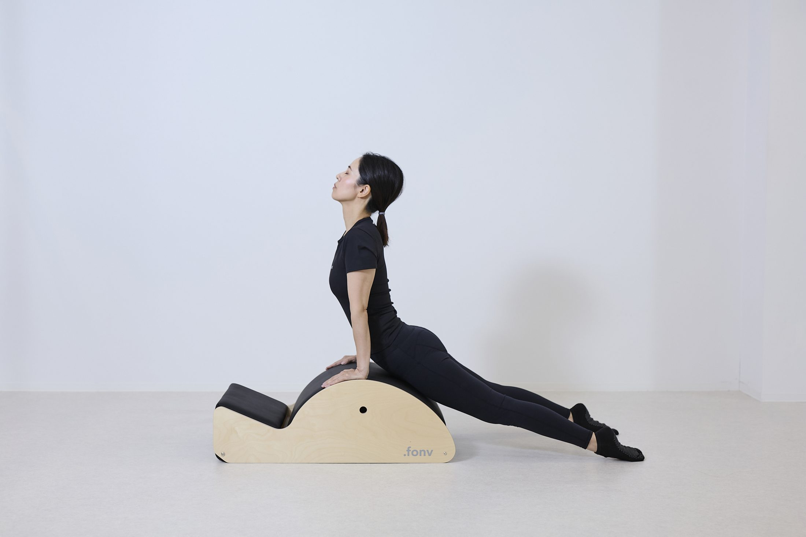
会社名、ご担当者名、希望人数をメールでお送りください。